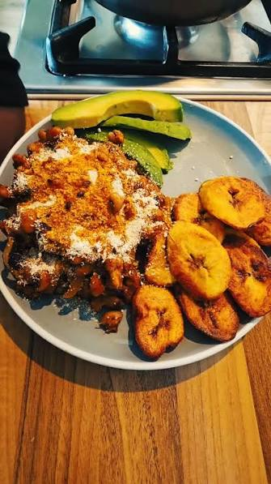

Jollof Rice with Chicken
Ingredients
- Chicken, onion, garlic, ginger, scotch bonnet peppers, seasonings, oil.
- Rice, tomatoes, tomato paste, onions, vegetable oil, broth, bay leaves, curry powder, thyme.

Banku with Tilapia
Ingredients
- Fermented corn dough, cassava dough, water, salt.
- Tilapia, ginger, garlic, onions, scotch bonnet peppers, seasoning cubes/spices, oil, salt
- Fresh scotch bonnet or green habanero peppers, onions, tomatoes, salt.

Fried Rice
Ingredients
- Cooked jasmine/white rice, vegetable oil, soy sauce, green onions, garlic, ginger.
- Mixed veggies (carrots, peas, sweet corn, green beans).
- Eggs, chicken or beef strips, hot dog/sausage slices, seasoning cubes, curry powder.

Fried Plantain with beans and Gari (Gobe)
Ingredients
- Ripe plantains, salt, light oil/butter.
- Black-eyed peas, palm oil, onions, tomatoes, scotch bonnet peppers, garlic, ginger, salt, seasoning cube.
- Gari (cassava flakes), ripe plantains, vegetable oil.